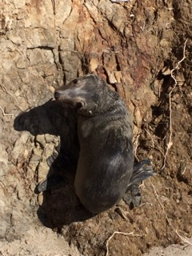

Sam Ballas
Home
Contact
Menu
Ballas Tenure Review
Documents
CV
Research Statement
Teaching Statement
Papers
(with full text links)
Tame and relatively elliptic \(\mathbb{CP}^1\) structures on the thrice punctured sphere
joint with
Phil Bowers
and
Alex Casella
, and
Lorenzo Ruffoni
, preprint, 2021
The moduli space of marked generalized cusps in real projective manifolds
joint with
Daryl Cooper
and
Arielle Leitner
, arXiv:2008.09553
Gluing equations for real projective structures on 3-manifolds
joint with
Alex Casella
, to appear in Geom. Dedicata
Thin subgroups isomorphic to Gromov--Piatetski-Shapiro lattices
Pacific J. Math. 309 (2020), no 2, 257--266.
Constructing thin subgroups of SL(n+1,R) via bending
joint with
Darren Long
, Algebr. Geom. Topol. 20-4 (2020), 2071--2093
Constructing convex projective 3-manifolds with generalized cusps
to appear in J. London Math. Soc.
Supplemental Sage notebooks related to this work can be found
here
Generalized cusps in real projective manifolds: classification
joint with
Daryl Cooper
and
Arielle Leitner
, J. Topol. 13-4 (2020) 1455--1496
Convex projective bendings of hyperbolic manifolds
joint with
Ludovic Marquis
, Groups, Geom, & Dynam 14 (2020), no. 2, 653-688.
Convex projective structures on non-hyperbolic three-manifolds
joint with
J. Danciger
and
G.-S. Lee
, Geom. & Topol. 22 (2018), no. 3, 1593–1646
Constructing thin subgroups commensurable with the figure-eight knot group
joint with
Darren Long
, Algebr. Geom. Topol. 15 (2015), no. 5, 3011–3024
Finite volume properly convex deformations of the figure-eight knot
Geom. Dedicata 178 (2015), 49–73
Deformations of non-compact, projective manifolds
Algebr. Geom. Topol. 14 (2014), no. 5, 2595–2625
Flexiblity and rigidity of three-dimensional convex projective structures
Ph.D. thesis, University of Texas at Austin, (2013)
Contact
208 Love Building
1017 Academic Way
Tallahassee, FL 32306-4510
E-mail: ballas@math.fsu.edu
